주제 5 · 7~8차시
작업 지도 위에서 일하기
세계를 고정하고, 재고, 순서를 설계한다
실제 구분 차시보다 많은 시간이 소요될 수 있음.
정렬 없이 보내보기 실습 1 · 정렬 없이 먼저
from roboid import * raccoon = Raccoon() raccoon.move_to(-8, 12, 10) # C2 칸에 적힌 좌표 wait(1000) raccoon.move_to(-8, 12, 3, 30) # 천천히, 3cm 까지만
작업지도를 일부러 정렬하지 말고 로봇 앞에 대충 펴 놓는다.
그리고 C2 칸에 인쇄된 좌표 (−8, 12) 를 그대로 보내보자.
z 는 3cm 에서 멈춘다 — 책상에 닿기 전에 눈으로 비교한다
오류가 생기는 원인은 로봇 잘못일까, 종이 잘못일까?
[기록해두기]
집게 끝이 C2 십자 위에 왔는지? 벗어났다면 몇 mm, 어느 쪽인지 자로 재서 적기.
옆 사람과 비교 — 벗어난 방향이 제각각일 건다.
로봇과 종이, 누가 틀렸을까? 생각해보기
로봇은 자기 원점(회전축이 책상과 만나는 점) 기준으로 (−8, 12) 에 정확히 갔다.
어긋난 이유 — 종이가 로봇의 좌표계와 안 맞게 놓여서.
원점이 1cm 밀리면 36칸이 통째로 1cm 밀린다.
벗어난 방향이 사람마다 달랐던 이유 — 매트를 놓은 방식이 달랐으니까.
그러니 오늘 일의 절반은 코드가 아니라 종이와 로봇을 맞추는 일, 정렬이다.
— 왜 로봇이 보게 하지 않고, 종이에 좌표를 인쇄해 쓰는 걸까?
보게 할까, 고정할까? 지난 시간 1cm 실험 — 로봇은 블록이 어디 있는지 몰랐다
첫째, 로봇이 보게 한다. 카메라로 블록 위치를 재서 명령 좌표를 고치는 방식.
흔히 상상하는 로봇의 모습이지만 — 카메라·로봇 좌표계를 잇는 보정이 필요하고, 보정해도 잔차가 남는다.
둘째, 세계를 고정해 알려준다. 물건이 놓일 자리를 미리 정하고 그 좌표를 가르친다.
보정이 필요 없는 대신 — 물건을 정해진 자리에 놓아야 한다는 조건이 붙는다.
오늘 하는 것이 이쪽이다.
그러면 산업 현장의 로봇은 두 방법 중 어느 쪽일까?
대부분의 자동차 공장 용접 로봇은 카메라가 없다
차체와 작업 공간이 정확히 고정되어 있기 때문에 로봇은 가르쳐 준 좌표로 가서 정해진 동작만 수행한다.
따라서 카메라가 불필요하고, 카메라(비전인식)는 위치를 고정할 수 없을 때만 쓴다.
오늘 답해야 할 네 가지 핵심 질문
Q1
블록만 1cm 옮기자 같은 코드가 허공을 집었다. 로봇은 블록이 아니라 좌표를 따라갔다. 이 문제의 해결책 두 가지는 각각 무엇이고, 우리는 왜 지도를 택했는가?
Q2
칸 이름은 어떻게 좌표로 바꿀 수 있을까?
Q3
로봇이 (−8, 12)에 갔다고 보고할 때, 정말 거기에 있는가?
Q4
접근 방향을 바꾸면 왜 착지점이 달라지는가?
작업 지도 읽어보기
C2
(−8, 12) r14.4 −45°
한 칸에 적힌 네 가지 — 칸 이름 · 좌표 (x, y) · 반경 r · 그리퍼 기울기.
가운데 십자 = 로봇이 실제로 가는 점. 점선 사각형 = 블록을 놓는 자리.
점선이 왜 필요한가.
칸 40mm, 블록 30mm — 그냥 놓으면 블록이 ±5mm 떠다닌다. 전체 오차에서 가장 큰 항목이었다.
점선에 맞춰 놓으면 ±1mm. 로봇이 아무리 정확해도, 블록을 점선에 안 맞추면 못 집는다.
| 용지 | 격자 | 좌표 범위 | 그 밖에 인쇄된 것 |
|---|---|---|---|
| A3 가로 | 9×4 = 36칸 | x −16~16 / y 8~20 | 원점 십자 · 베이스 정렬 자리 · 도달 한계 호 · 10cm 검증 자 |
| B4 가로 | 7×3 = 21칸 | x −12~12 / y 8~16 |
정렬과 배율
세 가지를 순서대로.
첫째, 배율 검증. 인쇄된 10cm 자를 실제 자로 잰다 — 10.0cm 가 아니면 “페이지에 맞춤” 을 끄고 100%로 다시 인쇄.
프린터마다 배율이 다르고, 축소 인쇄가 기본값인 경우가 많다.
둘째, 원점 맞추기. 베이스 회전축을 원점 십자에 — 흔한 실수가 앞면을 맞추는 것. 회전축은 베이스 중심에 있다. 베이스 자리 사각형에 얹으면 자동으로 맞는다.
셋째, 고정. 매트 네 귀퉁이를 테이프로, 로봇도 움직이지 않게 — 수업 중 1cm 밀리면 모든 칸이 1cm 틀어진다.
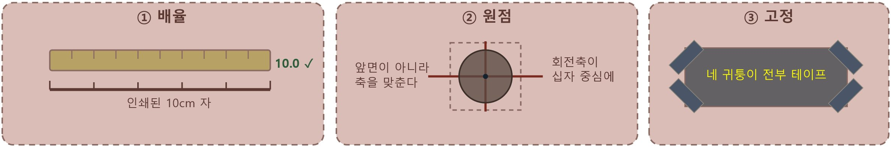
검증: E2 칸(0, 12)에 블록을 놓고 로봇을 그 좌표로 보낸다. 그리퍼가 블록 바로 위에 오는가? 이 검증을 통과하지 못하면 오늘 나머지 활동이 전부 실패한다.
칸 이름을 좌표로 구현 · 작성&실행 05_작업지도_틀.py
칸 이름을 좌표로 변환하기 위해서는 두 가지 방법이 있다. — 정답은 없지만 선택한 근거가 중요하다
딕셔너리 — 읽기 쉽고 예외 칸을 끼우기 쉽다. 대신 36줄을 손으로.
계산 — 짧고 격자 확장이 쉽다. 대신 예외 칸이 어렵다.
설정되지 않은 칸 위치(Z9) 가 들어오면?
잘못된 칸 이름에 조용히 이상한 좌표를 돌려주면, 프로젝트(주제 6)에서 로봇이 엉뚱한 곳으로 간다.
칸 좌표를 기록한 05_작업지도_틀.py을 활용해보자
cell_to_xy("C2") -> (-8, 12)방법 A · 딕셔너리
방법 B · 계산
CELLS = {"A1": (-16, 8),
"A2": (-16, 12), ... }x = X0 + (ord(c) - 65) * 4 # 글자 → 열 번호 y = Y0 + (int(r) - 1) * 4 # 숫자 → 행 번호
주제 4에서 만든 집기 함수를 그대로 재사용한다 · 기울기는 arm_helper.tilt_for(r)
왜 칸마다 기울기가 다를까?
| 반경 r | 기울기 | 팔의 자세 |
|---|---|---|
| 15.5 cm 이상 | 수평 0° | 팔을 뻗은 상태로 위에서 내려간다 |
| 11 ~ 15.5 cm | 기울임 −45° | 수평으로는 관절 한계에 걸린다 |
| 11 cm 미만 | 수직 −90° | 팔을 접은 상태로 똑바로 내려간다 |
매트의 칸 색상이 세 종류로 나뉜다.
관절 한계로 인해 가까운 칸일수록 수직으로 내려가야 한다.
E1(반경 8cm)에 수평 그리퍼로 가려 하면 can_move_to 가 False 를 돌려준다.
[확인해보기]
매트에 인쇄된 기울기와 tilt_for(r) 값을 비교해보자.

다음 시간에 잴 세 가지 예상해보기 예상 적기 · 다음 시간에 펜으로 판정한다
| 질문 | 내 예상 |
|---|---|
| ① 같은 명령을 10번 주면 매번 정확히 같은 점에 찍힐까? 흩어진다면 몇 mm 쯤? | |
| ② 같은 칸이라도 왼쪽에서 접근할 때와 오른쪽에서 접근할 때 착지점이 같을까? | |
| ③ 먼 칸(A4)과 가까운 칸(E1) 중 어느 쪽이 더 흔들릴까? |
다음 시간에 그리퍼에 펜을 물려 점을 찍어서 판정한다.
로봇은 소수점까지 또렷하게 좌표를 처리하지만 그 말을 어디까지 믿어도 되는가?
로봇이 C2에 갔다고 말한다. 정말 거기 있을까? 8차시
지난 시간 끝에 세 가지를 예상해 적었다.
오늘은 그 예상을 펜과 자로 재서 맞춰 본다.
10회 산포 · 접근 방향 · 먼 칸과 가까운 칸
안전 규칙 복창
battery_state()
매트 정렬 재확인
펜 · 자 준비
반복정밀도 측정 핵심 활동
홈 → C2 로 가서 펜으로 점 → 홈. 이것을 열 번 반복한다.
매번 같은 점에 찍힐까?
from roboid import *
raccoon = Raccoon()
x, y = -8, 12 # C2 칸 — A4 는 (-16, 20), E1 은 (0, 8)
z_펜 = 4.0 # ← 펜을 4cm 쯤 내밀어 물렸을 때 (1.5 아래 금지)
# 펜 물리기 — 팔을 쭉 펴고 고무줄로 감는다 (표시선을 집게 끝에)
raccoon.move_to(0, 25, 12, 20)
raccoon.open_gripper()
input("고무줄로 감았으면 Enter > ")
raccoon.close_gripper()
for i in range(10):
raccoon.move_to(x, y, 10) # 위에서 접근
raccoon.move_to(x, y, z_펜, 20) # 콕!
raccoon.beep()
raccoon.move_to(x, y, 10) # 다시 들어 올리고
raccoon.degree_to(0, -10, -140, 60)# 홈에서 다시 출발
raccoon.dispose()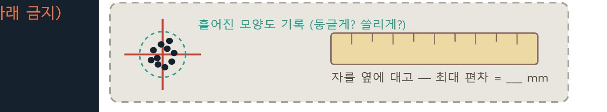
[기록해두기] 열 점의 평균 위치 · 최대 편차(mm) · 흩어진 모양
먼 칸(A4, r=25.6)과 가까운 칸(E1, r=8.0)을 각각 재서 비교해보자.
어느 쪽이 더 흩어질까?
같은 칸, 다른 방향에서 접근하면? 핵심 질문 Q4 · ch5_13p.py
C2 에 점을 찍는 것은 같다. 다만 출발점을 바꾼다 — 왼쪽 A2 에서 5번, 오른쪽 G2 에서 5번.
두 무리의 평균 위치가 다를까? 다르면 몇 mm?
차이가 없으면 없다고 기록하는 것도 결과다.
출발칸 = "A2" # ← "G2" 로 바꿔 다섯 번 더 — lessons/ch5_13p.py

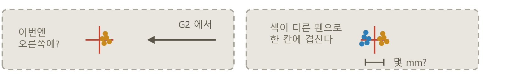
차이가 나타난다면 — 범인은 백래시. 기어의 맞물림 틈 때문에, 방향을 바꾸면 그 틈만큼 먼저 헛돈다.
그래서 현장은 정밀 작업에서 항상 같은 방향에서 접근한다 — 단방향 접근.
[해보기] 목표 칸에 항상 왼쪽에서 접근하게 고치고, 반복정밀도를 다시 재서 개선됐는지 확인.
확신한다 ≠ 맞다 1회차 / 3 — 이번엔 몸으로
raccoon.xyz() → (-8.0, 12.0, 3.0)
로봇은 자기 위치를 소수점까지 또렷하게 말한다. 그런데 방금 우리가 잰 것은 10개의 점이 흩어져 있다.
그 이유는 로봇이 이동한 거리와 각도를 ＇센서로 잰 것이 아니라＇
로봇은 자기가 실제로 어디 있는지 모르기 때문이다.
시스템이 자기 오차를 인지하지 못한다면 사람이 한계를 정해줘야 한다.
그래서 블록을 3cm이지만 작업 지도의 칸은 4cm로 넉넉하게 되어 있다.
비교와 이동, 뭐가 비쌀까? [미션] 로봇으로 정렬하기 · 03_정렬_실연.py
03_정렬_실연.py — 뒤섞인 블록 [4,3,2,1] 을 로봇이 정렬한다.
로봇은 번호를 보지 못한다 — 블록을 놓은 순서를 실행할 때 입력해 알려 준다 (예: 4321).
S/W상의 계산(if문으로 값 비교하기)은 저렴하고, H/W 동작(블록끼리 자리 교환하기)는 비싸다고 가정해보자.
실행 전에 예상부터: 교체 동작은 몇 번 나올까? ___ 회
1) 화면에 나오는 비교·스왑 횟수와 소요 시간을 표의 여섯 칸에 받아 적는다.
— 두 정렬의 시간을 가르는 것은 비교일까, 스왑일까?
준비물 — 번호 블록 4개 (3cm, 스티커 1~4)
| 알고리즘 | 비교 | 교환 | 소요 |
|---|---|---|---|
| 선택 정렬 | ___ 회 | ___ 회 | ___ 초 |
| 버블 정렬 | ___ 회 | ___ 회 | ___ 초 |
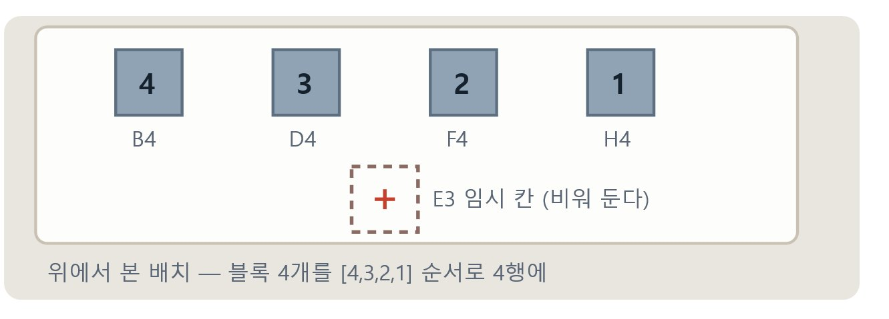
[해보기] 블록을 다른 순서로 놓고 그 순서를 입력한다 — 스왑 횟수를 먼저 예상하고 실행
이 파일 하나로 돌아간다 · 실기기는 _실기기 파일과 같은 폴더에
정렬 실연 — 어느 칸에 놓나 03_정렬_실연.py · A3 작업지도
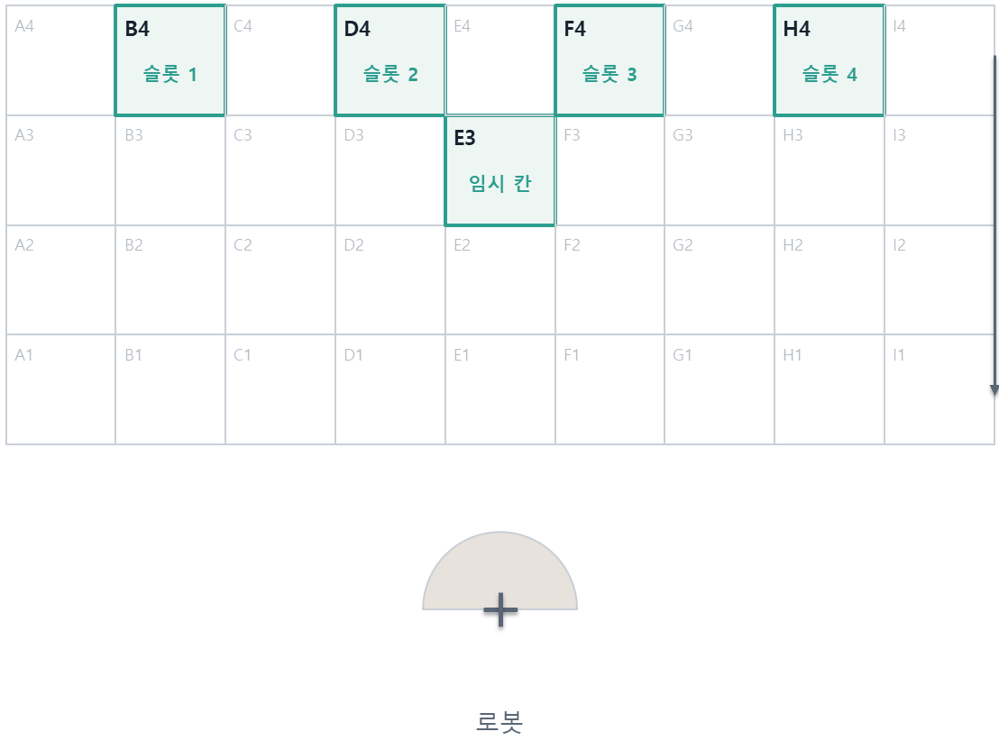
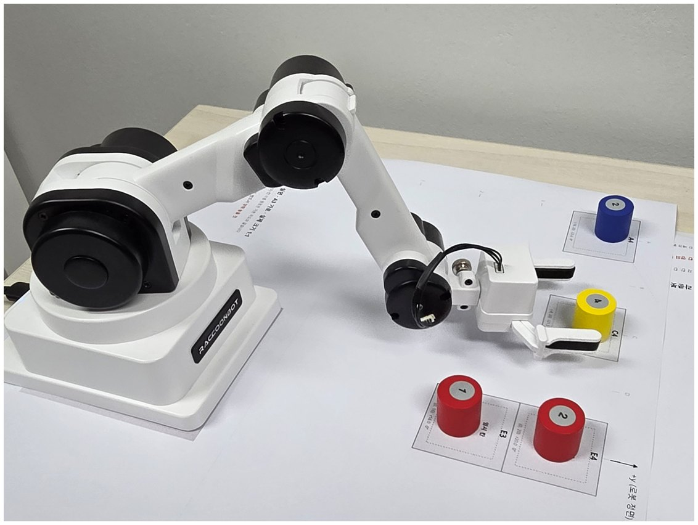
슬롯 네 칸 + 임시 칸 하나 · 블록은 뒤섞어 놓고 시작한다
같은 결과, 세 배 차이 [미션] 로봇으로 정렬하기 · 결과
| 알고리즘 | 비교 | 스왑 | 소요 |
|---|---|---|---|
| 선택 정렬 | 6회 | 2회 | 30초 |
| 버블 정렬 | 6회 | 6회 | 90초 |
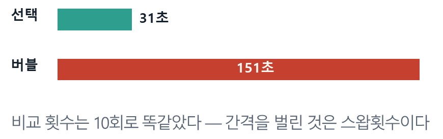
같은 결과, 세 배 차이 — 비교 횟수는 같았는데 이동(스왑) 횟수가 갈랐다.
스왑 1회 = 집기 3번(옮기고, 메우고, 되돌리고) — 비교는 if 한 줄인데 스왑은 로봇이 세 번 움직인다.
이동이 비싼 세계에서는 알고리즘 선택이 곧 시간이다.
그런데 이동을 줄이는 길이 하나 더 있다 — 횟수가 아니라 거리. 다음 장에서 잰다.
[해보기] 어떤 시작 배열이면 두 정렬의 스왑 수가 같아질까? — 예상하고 입력해 확인
순서를 바꾸면 얼마나 빨라질까? 미션
방금 정렬은 이동 횟수를 줄여 시간을 벌었다.
이동 비용이 비싸다면 같은 칸들을 방문해도 도는 순서에 따라 이동 거리를 짧게할 수 있다.
1. 매트에서 여섯 칸을 골라 이름을 리스트에 적는다.
2. 로봇이 리스트 순서대로 각 칸 위 10cm 를 방문하게 하고 걸린 시간을 잰다.
3. 여섯 칸의 위치 순서를 특정한 기준
(로봇과 가까운 순서, 왼쪽에서 오른쪽 등)을 적용하여 배치하고 시간을 잰다.
4. 2단계에서 걸린 시간과 3단계에서 걸린 시간을 비교해보자.
칸들 = ["A4","E1","I3","B2","H4","C1"]
# ↑ 이 리스트의 순서 = 도는 순서
for 칸 in 칸들:
x, y = cell_to_xy(칸) # 오전에 만든 변환
raccoon.move_to(x, y, 10) # 칸 위 10cm한걸음 더
항상 최적 순서 대로 움직일 수 있을까?(외판원 문제)
6개 = 720가지 경우의 수, 전수 탐색 가능.
10개 = 362만.
20개 = 우주의 나이로도 셀 수 없음
지금은 못 하는 것
색깔을 사람이 알려줘야 한다. 로봇은 빨강과 파랑을 구분하지 못한다
분류 공장, 동작 과정 [미션] 분류 공장 운영하기 · 04_공장_시뮬레이션.py
04_공장_시뮬레이션.py — 둘이 한 조. 로봇은 색을 보지 못하므로, 색 판정은 사람(검사원)의 몫이다.
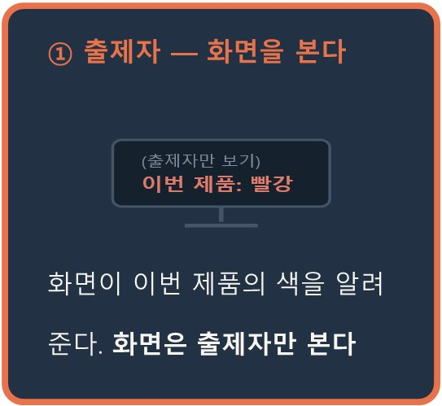
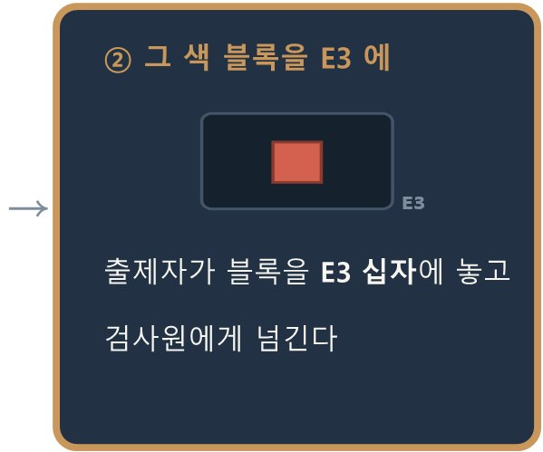
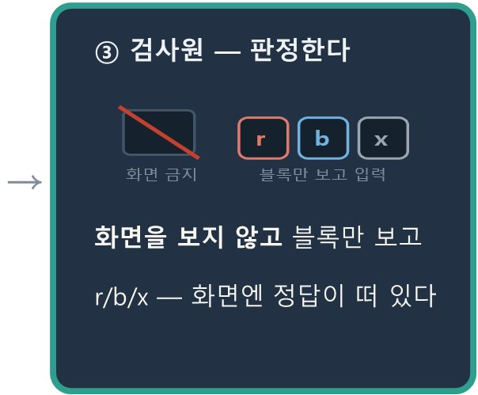
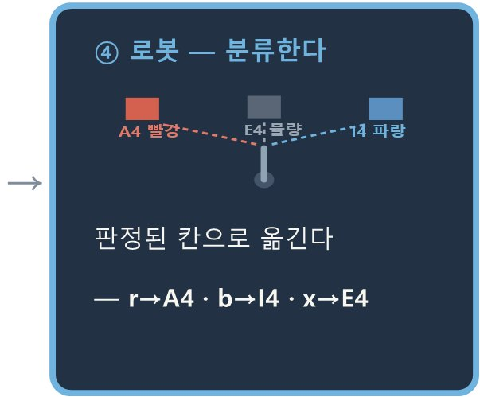
점수 — 맞음 +10 · 틀림 −15
제품 8개 = 한 사이클 · 모든 판정과 시간은 CSV 로 자동 저장 (extras/factory_log.csv)
지금은 색을 사람이 판정한다 — 로봇은 빨강과 파랑을 구분하지 못한다 (다음 주제의 동기)
이 파일 하나로 돌아간다 · 실기기는 _실기기 파일과 같은 폴더에
공장 시뮬레이션 — 어느 칸에 놓나 04_공장_시뮬레이션.py · A3 작업지도
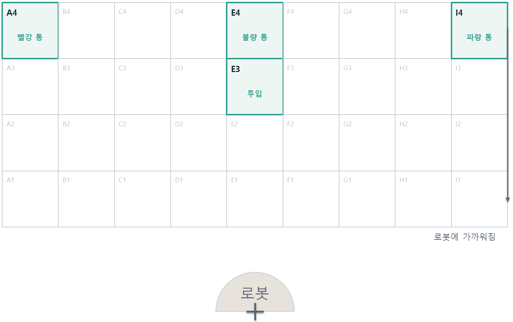
· 제품은 투입 칸에 하나씩 도착한다
— 사람이 거기 놓아 준다.
· 로봇이 색을 듣고 통으로 옮긴다.
판정은 사람이 한다.
준비물 — 빨강·파랑 블록 여러 개
(불량 = 뒤집거나 표시한 블록)
역할 2명 — 출제자 / 검사원
투입 칸 하나 · 수거함 세 칸 — 제품은 사람이 투입 칸에 놓아 준다
한 사이클 — 제품 여덟 개 [미션] 분류 공장 운영하기 · 한 판 · 04_공장_시뮬레이션.py
python extras/04_공장_시뮬레이션.py 를 실행하면 한 사이클이 시작된다.
매트는 오른쪽처럼 — 블록은 늘 E3 로 들어오고, 목적지는 판정이 정한다.
프로그램이 끝나면 정확도 · 점수 · 소요 시간 · 처리량이 찍힌다.
[해보기]
1. 한 판(8개) 돌리고 점수와 시간을 적는다
2. 점수 규칙의 −15 를 −50 으로 바꾼다 — 내 판정 속도가 어떻게 변하는가?
3. 우리 조의 전략은? 더 빨리 vs 더 신중히 — 한 줄로 적는다
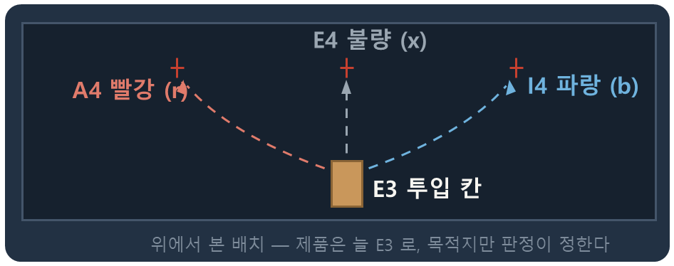
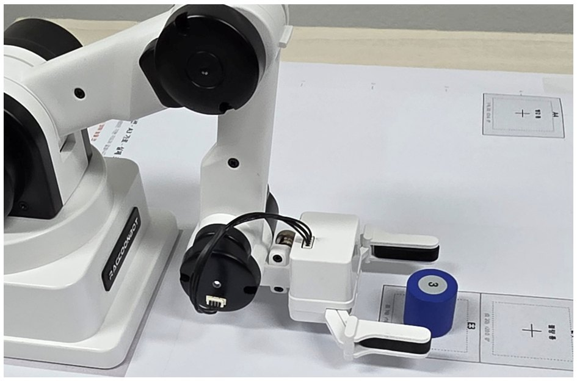
불량(x) 블록을 어떻게 표시할지(뒤집기? 스티커?)는 조에서 먼저 약속한다 — 검사원이 알아볼 수 있어야 한다
하노이 탑, 일곱 줄로 옮겨보기 [심화 미션] 하노이 탑 · A3 작업지도
하노이 탑 — 크기가 다른 판을 쌓은 탑을, 자리 세 곳(출발 · 경유 · 도착)만 써서 통째로 옮기는 퍼즐이다.
규칙은 둘 — 한 번에 한 장만 옮긴다 · 작은 판 위에 큰 판을 올릴 수 없다. 번호가 판의 크기다.
탑은 로봇에서 멀어지는 쪽으로 눕혀 한 열에 늘어놓는다 — 가까운 칸이 바닥.
출발
경유
도착
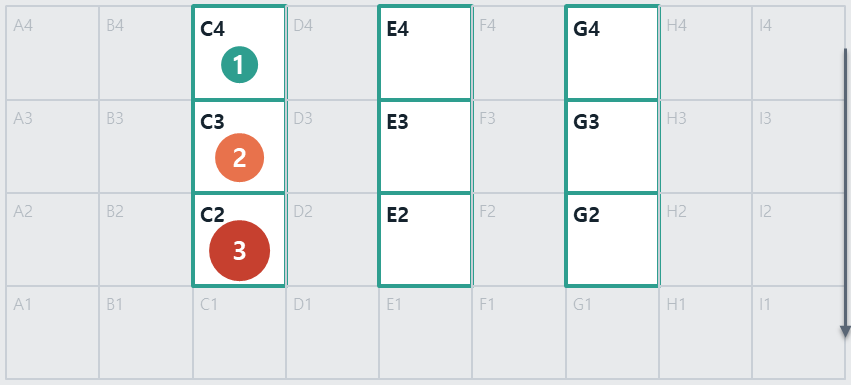
출발
경유
도착
C2 · C3 · C4
E2 · E3 · E4
G2 · G3 · G4
로봇에 가까워짐
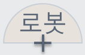
로봇에 가까운 칸이 탑의 바닥, 멀어질수록 위층이다.
작은 블록보다 먼 칸에 큰 블록을 둘 수 없다.
하노이 탑, 일곱 줄로 옮겨보기 [심화 미션] 하노이 탑
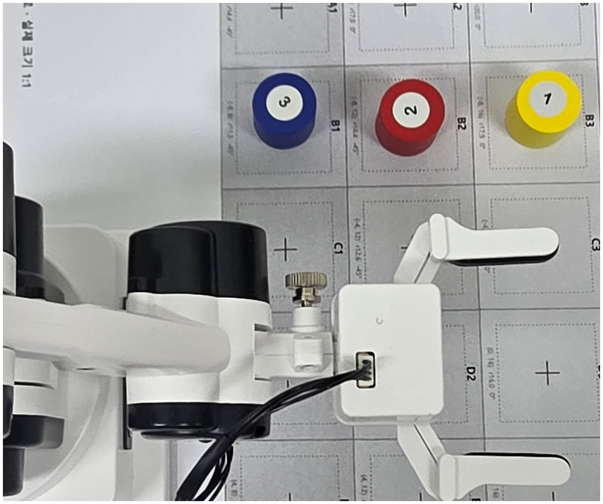
준비물 — 같은 크기 3cm 블록 3개 + 번호 스티커 1·2·3 (번호가 ‘판의 크기’ 역할)
· 큰 번호가 로봇에 가장 가까운 칸이 되게
[A3 활동지 기준] C2·C3·C4에
[B4 활동지 기준] B1·B2·B3에
한 열로 놓고 시작
※ 교구나 블록이 없는 경우 가상 모드 활용
직접 만들어 보기 — 세 걸음 하노이 탑 · 작성&실행 05_하노이탑_실습.py
이 파일 하나로 돌아간다 · 실기기는 _실기기 파일과 같은 폴더에
로봇은 목록을 수행할 뿐이고, 목록을 만드는 일은 사람이 정해줘야 한다.
1단계 · 두장()
<핵심코드> - 블록 2개를 옮기기 위한 순서
가장 작은 블록을 경유지로 잠시 두고 -> 큰 판을 목적지로 옮긴다. -> 경유지에 둔 가장 작은 블록을 목적지로 옮긴다.
2단계 · 세장() [빈칸]
맨 아래 큰 판을 옮기려면 위의 2장이 먼저 비켜 줘야 한다.
비켜 둘 블록을 경유에 두고 moves.append로 옮겨야 할 블록 중 가장 큰 블록을 목적지로 이동한다.
3단계 · hanoi() [빈칸]
두장() 과 세장() 을 나란히 놓으면 동작 루틴이 같고 옮겨야 할 블록의 숫자만 다르다.
둘을 한 함수로 합치면 부를 이름이 자기 자신이 된다. 이러한 문제 해결 방식을 “재귀 호출”이라고 부른다.
extras/05_하노이탑_기본.py 로 먼저 7수를 눈으로 보고, 05_하노이탑_실습.py 를 연다
2단계만 끝내도 로봇은 움직인다
하노이 탑, 일곱 줄로 옮겨보기 [심화 미션] 하노이 탑 · 05_하노이탑.py
def hanoi(n, src, dst, via):
if n == 0: return
hanoi(n-1, src, via, dst) # ① n-1 장을 비켜 둔다
옮긴다(src, dst) # ② 가장 큰 판
hanoi(n-1, via, dst, src) # ③ 그 위로extras/05_하노이탑.py 를 실행하면 이 함수가 만든 이동 목록을 팔이 수행한다 — 블록 3장이면 딱 7회 이동 수행
로봇은 탑을 보지 못한다 — 자리는 코드가 센다.
그래서 그림과 똑같이 놓는 것이 중요하고, 도중에 손대지 않는다.
함수가 자기 자신을 부르는 것(재귀)을 코드로 읽지 말고, 팔의 움직임으로 먼저 보자.
[해보기]
1. 파일 맨 위의 N 을 1씩 올리며 (블록도 N 장으로 늘려 놓고) 걸린 시간을 적는다 — 3장 7번, 4장 15번, 5장 31번…
2. 10장이면 몇 번일까? (계산: 2¹⁰ − 1 = 1023번 — 오늘 수업 안에 끝날까?)
3. [레벨 2] ①과 ③ 줄의 순서를 바꾸면? 예상부터 적고 실행.
이 파일 하나로 돌아간다 · 실기기는 _실기기 파일과 같은 폴더에
블록 2장 옮겨보기 — A3 작업지도 기준 하노이 탑
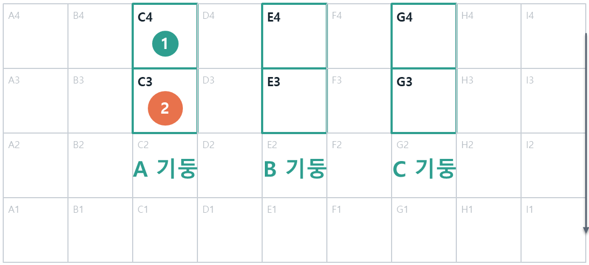
로봇에 가까워짐
탑을 쌓지 않는다. 로봇에서 멀어지는 쪽으로
눕혀서 한 줄에 늘어놓는다.
블록을 이렇게 놓는다
●
2번 크기 블록 → C3 칸
●
1번 크기 블록 → C4 칸
1번이 가장 작고 2번이 가장 큽니다.
[핵심 규칙] 작은 블록보다 먼 칸에 큰 블록을 둘 수 없다.

탑을 쌓지 않고 눕힌다. 로봇에 가까운 칸이 탑의 바닥이다.
블록 2장 — 로봇이 지나갈 순서 하노이 탑
옮기는 횟수 3회 (= 2^2 - 1). 아래 칸 = 로봇에 가까운 칸.
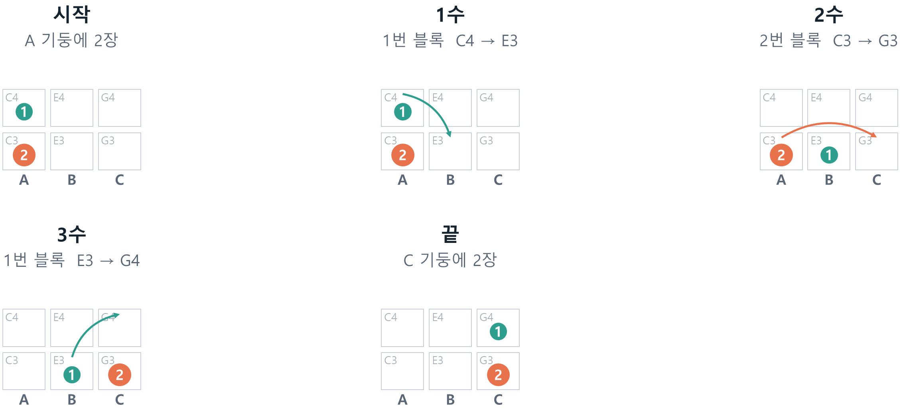
블록 3장 옮겨보기 — A3 작업지도 기준 하노이 탑
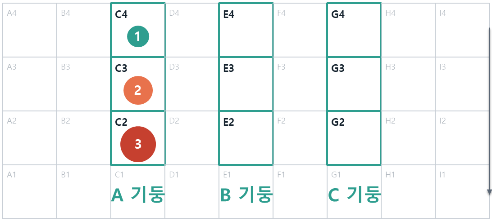
탑을 쌓지 않는다. 로봇에서 멀어지는 쪽으로
눕혀서 한 줄에 늘어놓는다.
블록을 이렇게 놓는다
●
3번 크기 블록 → C2 칸
●
2번 크기 블록 → C3 칸
●
1번 크기 블록 → C4 칸
1번이 가장 작고 3번이 가장 큽니다.
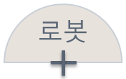
로봇에 가까워짐
[핵심 규칙] 작은 블록보다 먼 칸에 큰 블록을 둘 수 없다.
블록이 한 장 늘면 칸도 한 칸 더 쓴다.
블록 3장 — 로봇이 지나갈 순서 하노이 탑
옮기는 횟수 7회 (= 2^3 - 1). 아래 칸 = 로봇에 가까운 칸.

옮기는 횟수 7회 = 2³ − 1. 한 장 늘었는데 횟수는 두 배가 넘게 증가한다.
집게에 자석을 달면 자석 낚시 · 08_자석_확인.py
준비물
네오디뮴 원형 자석 1개(지름 10~12mm) · 철 클립 · 통 하나. 자석은 집게 날 아래 면에 고정하고 집게를 닫아 둔다.
먼저 재는 것
08_자석_확인 으로 붙는 높이·손목을 돌려도 안 떨어지는지·겹쳐 붙는지를 잰다.
측정한 권장 높이를 탐색·경주 파일 맨 위 ‘자석높이’ 에 적는다.
정해 둔 것
로봇은 클립을 놓지 못한다. 붙은 클립은 달고 다니거나 사람이 뗀다.
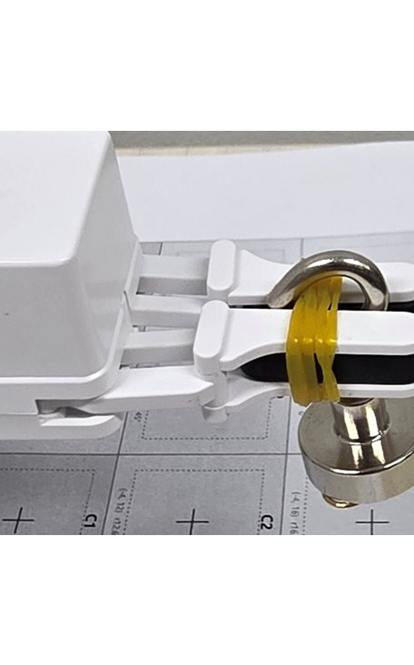
자석 탐색 — 몇 번 만에 찾나 자석 탐색 · 09_자석_탐색.py
줄 = ["A2", "B2", "C2", "D2", "E2", "F2", "G2", "H2", "I2"]
판수 = 3 # 판마다 짝이 클립을 다시 놓는다
# 실행하면 고른다
# 1 순차 왼쪽 끝부터 차례로
# 2 랜덤 남은 칸 아무 데나
# 3 직접 내가 정한 순서
# 4 이진 가운데를 찍고, 짝이 "더 왼쪽 / 더 오른쪽"
for cell in 순서:
arm.pick_magnet(cell) # 자석을 내렸다 든다
if 붙었나(cell): # 사람이 y/n
break작업 지도 2행 한 줄에 짝이 클립 하나를 놓는다. 술래는 지도를 보지 않는다.
로봇이 칸을 하나씩 찍고, 붙었는지를 사람이 답한다. 몇 번 만에 찾았나가 점수다.
찍는 방식을 골라 세 판씩 돌리고 평균과 최악의 경우 탐색 횟수를 적는다.
순차와 랜덤
아홉 칸이면 순차·랜덤 모두 평균 5번쯤 · 최악 9번으로 횟수는 같고, 이동 거리는 랜덤이 세 배쯤 길다. 이진은 평균 3번쯤 · 최악 4번이다.
이진은 왜 따로인가
자석은 '붙었나' 만 안다. 정답이 어느 쪽인지 짝이 말해 줘야 반을 버린다 — 정렬된 자료라야 이진 탐색이 된다. 아홉 칸을 네 번 안에 끝낸다.
가상으로 돌리면 방식별 300판 평균을 표로 보여 준다 · 이 파일 하나로 돌아간다
자석 탐색 — 어느 칸에 놓나 09_자석_탐색.py · A3 작업지도

· 짝이 A2~I2 가운데 한 칸에
클립 하나를 놓는다.
— 술래는 지도를 보지 않는다.
· 로봇이 찍어 볼 순서를 고르고
(순차·랜덤·직접·이진)
몇 번 만에 찾는지 센다.
준비물 — 자석 1개 · 철 클립 1개
(자석은 집게 날 아래 면에)
역할 2명 — 짝 / 술래
2행 한 줄 · 클립 하나 — 술래는 지도를 보지 않는다
자석 경주 — 어디를 들를까 자석 경주 · 10_자석_경주.py
칸 = ["C2", "E2", "G2", "C3", "E3", "G3", "C4", "E4", "G4"]
클립개수 = 6 # 짝이 아무렇게나 흩어 놓는다
제한시간 = 12.0 # 아홉 칸을 다 돌려면 20초쯤 든다
방문순서 = [] # 비면 실행할 때 묻는다
for cell in 방문순서:
if 지난시간 >= 제한시간:
break
arm.pick_magnet(cell) # 붙인 채로 다음 칸
# 끝나면 자석에 붙은 클립을 센다짝이 클립 여섯 개를 칸들에 아무렇게나 놓는다. 술래는 들를 칸의 순서만 정한다. 12초가 끝나면 자석에 붙은 클립을 센다 — 그게 점수다.
클립 자리를 모르니 정할 수 있는 것은 어디를, 몇 칸, 어떤 순서로 뿐이다.
뱀 모양으로 돌면
C2 E2 G2 G3 E3 C3 … — 12초에 여섯 칸, 평균 4.0개 (가상 300판).
가운데부터 십자로
E3 E2 E4 C3 G3 — 먼 칸을 오가느라 다섯 칸, 평균 3.3개. 이동을 줄이면 같은 시간에 한 칸 더 들른다.
한 판은 경향을 보기 어렵다 — 가상 버전을 실행하면 같은 순서를 클립 자리가 다른 300판에 돌려 평균을 보여 준다
자석 경주 — 어느 칸에 놓나 10_자석_경주.py · A3 작업지도
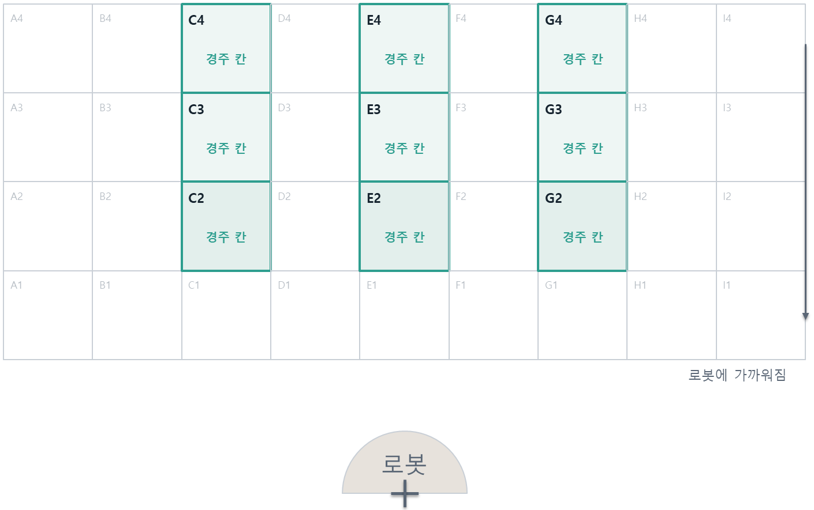
· 짝이 클립 6개를 아홉 칸에
아무렇게나 놓는다.
— 술래는 안 본다.
· 술래는 들를 칸 순서만 정한다.
12초가 지나면
자석에 붙은 클립을 센다.
준비물 — 자석 1개 · 철 클립 6개
(자석은 집게 날 아래 면에)
역할 2명 — 짝 / 술래
아홉 칸(B4 는 다섯 칸)에 클립 여섯 개를 아무렇게나
핵심 질문 — 이제 답할 수 있다
보게 하거나, 세계를 고정하거나 — 산업 현장은 대부분 후자
딕셔너리는 읽기 쉽고, 계산은 확장이 쉽다
로봇은 계산한 값을 말할 뿐, 실제 위치를 모른다
기어 틈(백래시) 때문에 방향이 바뀌면 착지점이 달라진다
오늘의 제출물
05_작업지도_틀.py(칸↔좌표) · 반복정밀도 측정표(산포 + 백래시) · 작업 순서 개선 기록
좋은 기록의 기준
실패를 재현 조건과 함께 기록하고, 가설을 세워 검증한 뒤 개선했는가
예: 단방향 접근으로 바꿔 재측정
다음 · 주제 6
지도는 어디인지는 알려 준다.
그런데 무엇인지는 모른다 — 빨강과 파랑을 구분하지 못한다